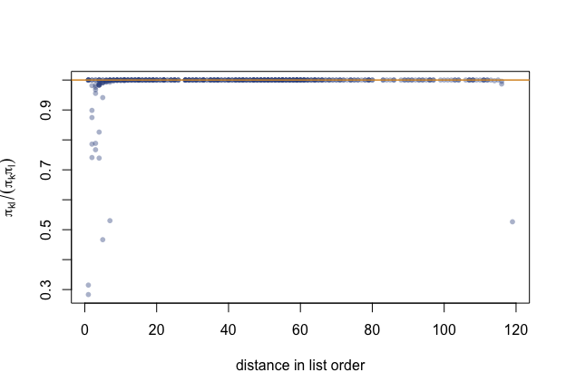

A point estimate without a variance is an anecdote, and a sequential
design offers more than one way to report it. This vignette puts the
package’s three reports side by side — what each one knows, what each
one costs, and how honestly each one behaves in repetition — and ends
with the replicate weights that open the rest of the survey
toolbox.
A frame where the order matters
The serpentine order is worth a variance report only when it carries real structure, so the study variable here trends with the sort keys: the implicit stratification has something to buy.
frame <- data.frame(
region = rep(c("north", "east", "south", "west"), each = 30),
size = rlnorm(120, meanlog = 2, sdlog = 0.7)
)
frame$y <- 40 * as.integer(factor(frame$region)) + 6 * frame$size +
rnorm(120, sd = 10)
truth <- sum(frame$y)
s <- chromy_sample(frame,
n = 30, size = "size",
order_by = c("region", "chromy_size"), seed = 1
)The three reports
With replacement (as_svydesign(), the
default): the design is taken as independent draws with the realised
weights. It knows nothing of the order, so the gain the serpentine
bought is left on the table — the honest reading is
conservative.
Successive differences
(estimate_total()): neighbours in list order stand in for
each other, so the local structure the serpentine created is read
directly. The convention of systematic-like designs since Yates.
Exact Sen–Yates–Grundy
(as_svydesign(variance = "pps")): the joint inclusion
probabilities of the design, in closed form (Chauvet and Le Gleut,
2021), handed to survey::ppsmat(). Nothing is approximated;
this is the design’s own variance.
estimate_total(s, "y")
#> # A tibble: 1 × 5
#> variable total se cv_pct random_draws
#> <chr> <dbl> <dbl> <dbl> <int>
#> 1 y 18827. 2194. 11.7 27
survey::svytotal(~y, as_svydesign(s))
#> total SE
#> y 18827 2801.2
survey::svytotal(~y, as_svydesign(s, variance = "pps"))
#> total SE
#> y 18827 2242Honesty in repetition
One sample cannot judge a variance estimator; repetition can. Eight hundred samples from the same design: the mean of each report against the empirical variance of the totals it is supposed to describe (ratios near one are honest; above one, conservative).
one <- function() {
s <- chromy_sample(frame,
n = 30, size = "size",
order_by = c("region", "chromy_size")
)
est <- estimate_total(s, "y")
wr <- survey::SE(survey::svytotal(~y, as_svydesign(s)))
yg <- survey::SE(survey::svytotal(~y, as_svydesign(s, variance = "pps")))
c(total = est$total, sd2 = est$se^2, wr = as.numeric(wr)^2, yg = as.numeric(yg)^2)
}
runs <- t(replicate(800, one()))
empirical <- var(runs[, "total"])
round(c(
relative_bias = mean(runs[, "total"]) / truth - 1,
with_replacement = mean(runs[, "wr"]) / empirical,
successive_diff = mean(runs[, "sd2"]) / empirical,
exact_sen_yates_grundy = mean(runs[, "yg"]) / empirical
), 3)
#> relative_bias with_replacement successive_diff
#> -0.001 3.573 1.794
#> exact_sen_yates_grundy
#> 1.118The ordering is the story: the with-replacement report pays heavily for ignoring the design; reading the order cuts the excess sharply; and the exact report sits nearest one — the design talking about itself.
The design, made visible
The joint probabilities are not only a variance input — they show the implicit stratification. For independent selections the ratio would sit at one everywhere; under Chromy’s procedure it is depressed for units close in list order (the serpentine keeps neighbours apart) and recovers with distance:
p2 <- joint_inclusion(s)
pos <- s$sample$position
pairs <- which(upper.tri(p2), arr.ind = TRUE)
gap <- abs(pos[pairs[, 1]] - pos[pairs[, 2]])
ratio <- p2[upper.tri(p2)] /
(diag(p2)[pairs[, 1]] * diag(p2)[pairs[, 2]])
plot(gap, ratio,
pch = 16, col = "#35508C66", cex = 0.8,
xlab = "distance in list order", ylab = expression(pi[kl] / (pi[k] * pi[l]))
)
abline(h = 1, col = "#D9962E", lwd = 1.5)
Figure of the chunk repulsion
Units that sit together in the list are almost never selected together; that repulsion is exactly what the variance reports below the with-replacement line are crediting.
Replicate weights, for everything else
Linearised variances serve totals and means; quantiles, domains and
calibrated analyses want replicates. as_svrepdesign()
builds the successive difference replication of Fay and Train (1995) —
the American Community Survey convention — perturbing only the rows
whose selection was actually random:
r <- as_svrepdesign(s)
survey::svytotal(~y, r)
#> total SE
#> y 18827 2170.8
survey::svyquantile(~y, r, quantiles = c(0.25, 0.5, 0.75))
#> $y
#> quantile ci.2.5 ci.97.5 se
#> 0.25 100.7314 77.15658 180.9065 25.28228
#> 0.5 104.6714 100.73137 181.9050 19.78078
#> 0.75 181.9050 160.35935 217.8350 14.00594
#>
#> attr(,"hasci")
#> [1] TRUE
#> attr(,"class")
#> [1] "newsvyquantile"
survey::svyby(~y, ~region, r, survey::svytotal)
#> region y se
#> east east 2965.029 467.2482
#> north north 6140.932 2255.8134
#> south south 4268.071 793.3339
#> west west 5452.841 1659.4390Which report, when
| report | knows | use it when |
|---|---|---|
| with replacement | the weights | a quick, conservative figure; multi-package pipelines |
| successive differences | the list order | the working report of the design; estimate_total()
|
| exact Sen–Yates–Grundy | the whole design | totals and means that must carry the exact variance |
| SDR replicates | the list order | quantiles, domains, calibration — anything beyond totals |
The exact form covers the default design — certainties resolved, head
"all"; a minimum-replacement sample has joint moments
rather than joint inclusion probabilities, and the successive-difference
and replicate reports are the ones that apply.
References
Chauvet, G. and Le Gleut, R. (2021). Properties of Chromy’s sampling procedure. Survey Methodology, 47(2), 321–347.
Fay, R. E. and Train, G. F. (1995). Aspects of survey and model-based postcensal estimation of income and poverty characteristics for states and counties. Proceedings of the ASA, Government Statistics Section, 154–159.